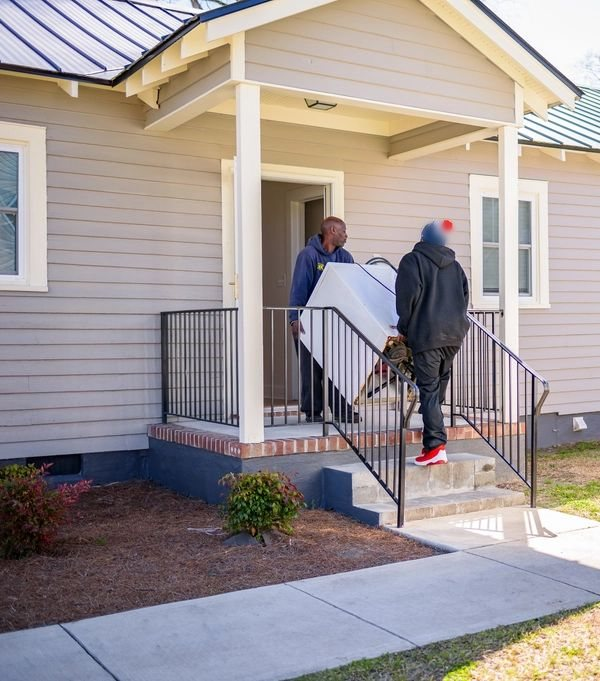

Evden eve · Ofis · Ambalaj
Hizmetler
Taşınmayla ilgili her konuda Kule Nakliyat'a yazabilir ya da arayabilirsiniz. Bu sayfada her başlık için, görüşmeden önce hazırlamanız işe yarayacak bilgileri topladık. Neyin nasıl yapılabileceğini sorun, bilgi verelim.
Evden eve taşıma
Bir evin taşınması birkaç işten oluşur: kolilerin hazırlanması, büyük eşyanın sökülmesi, kamyona yükleme, yeni evde odalara yerleştirme. Hangi kısmında desteğe ihtiyacınız olduğunu söyleyin; planı birlikte çıkaralım.
Evden eve taşımayı sorunGörüşmeden önce hazırlayın
- Çıkış ve varış adresinin semti
- İki binanın katı, bina asansörü olup olmadığı
- Eşya listesi: oda oda koltuk, yatak, beyaz eşya, koli
- Düşündüğünüz tarih ve ne kadar esnek olduğu
- Aracın bina önüne yanaşıp yanaşamayacağı
Ofis ve işyeri taşıma
Ofis taşımada asıl mesele işin aksamaması. Masaların, dosyaların ve bilgisayarların hangi sırayla toplanacağını, hangi gün ve saatte taşınacağını önceden konuşmak gerekir. Uygun gün ve saati sorun.
Masa numarası yöntemi
Her çalışma masasına bir numara verin. O masanın kolilerine, sandalyesine ve bilgisayarına aynı numarayı yazın; yeni ofiste masanın yerine de aynı numarayı yapıştırın. Kimse kendi eşyasını aramaz.
Görüşmeden önce hazırlayın
- Masa ve çalışan sayısı
- Dosya dolabı ve arşiv için yaklaşık koli sayısı
- Bilgisayar, ekran, yazıcı, sunucu gibi cihazların sayısı
- Binanın taşıma kuralları: yük asansörü, saat sınırı, giriş izni
- Hafta sonu ya da akşam saatleri tercihiniz
- Bilgisayar yedeklerinin alınıp alınmadığı
Ambalajlama ve paketleme
Kırılacak eşyalar taşınmanın en hassas kısmı. Paketlemeyi kendiniz yapabilir ya da destek isteyebilirsiniz. Hangi eşyaların nasıl paketleneceğini ve hangi malzemenin gerektiğini sorun.
Kendiniz paketleyecekseniz oda oda paketleme ipuçlarına ve koli etiketi aracına göz atın.
Paketlemeyi sorunGörüşmeden önce hazırlayın
- Kırılacak eşyalar: porselen, cam, ayna, tablo, avize
- Tahmini koli sayısı (eşya listesinden)
- Malzemeyi kimin alacağı: koli, bant, balonlu naylon
- Elektronik cihazların orijinal kutularının olup olmadığı
- Paketlemenin taşınmadan kaç gün önce yapılacağı
Mobilya söküm ve kurulum
Gardırop, baza, yemek masası, TV ünitesi gibi büyük eşyalar çoğu zaman kapıdan ve merdivenden geçmek için sökülür, yeni evde yeniden kurulur. Hangi eşyaların sökülmesi gerektiğini listede işaretleyin, nasıl yapılacağını sorun.
- Sökülen parçanın vidalarını kilitli poşete koyup o parçanın üstüne bantlayın.
- Kurulum kitapçığı varsa saklayın; yoksa sökmeden önce birkaç fotoğraf çekin.
- Duvara monte TV askısı, avize ve korniş için ayrıca sorun.
Az eşya, parça eşya
Bütün ev değil de birkaç koli, tek bir koltuk ya da yeni aldığınız bir dolap mı? Bunu da sorabilirsiniz.
Şunları yazın
- Eşyanın ne olduğu ve kabaca ölçüsü (en, boy, yükseklik)
- Kaçıncı kattan kaçıncı kata, asansör var mı
- Alınacak ve bırakılacak adresin semti
Beyaz eşya taşıma
Buzdolabı, çamaşır makinesi ve bulaşık makinesi ağır ve hassastır; taşımadan önce birkaç hazırlık gerekir. Taşımayı sorarken bu hazırlıkları birlikte konuşalım.
- Buzdolabı
- Bir gün önce boşaltın, fişini çekin, buzlanmayı çözdürüp içini kurulayın. Rafları ve çekmeceleri ayrı sarın. Yeni evde hemen çalıştırmayın; kullanım kılavuzunda önerilen süre kadar dik bekletin.
- Çamaşır makinesi
- Suyunu ve filtresini boşaltın. Kılavuzunda taşıma (nakliye) cıvatası varsa takın; tamburun sarsılmasını önler.
- Bulaşık makinesi
- Suyunu boşaltın, hortumları gövdeye bantlayın, sepetleri sabitleyin.
- Doğalgazlı ocak, fırın
- Gaz bağlantısını kendiniz sökmeyin; yetkili kişiye söktürün ve yeni evde yine yetkiliye bağlatın.

Temsili görselAmbalaj malzemeleri: hangisi ne işe yarar?
Kendiniz paketleyecekseniz ya da "hangi malzeme lazım" diye soracaksanız, kısa bir sözlük.
- Karton koliKüçüğü kitap, tabak, kavanoz gibi ağır şeyler için; büyüğü yastık, nevresim, giysi gibi hafifler için.
- Koli bandıKolinin altını H şeklinde bantlamaya yetecek kadar. Bant makinesi işi hızlandırır.
- Balonlu naylonCam, porselen, ayna, tablo ve elektronik için. Kabarcıklı yüz eşyaya bakmalı.
- Streç filmÇekmeceleri ve kapakları sabitlemek, kumaş koltuğu tozdan korumak, halıyı rulo hâlinde tutmak için.
- Ambalaj kâğıdıTabak ve bardakları tek tek sarmak, koli boşluklarını doldurmak için. Gazete mürekkebi açık renkli porselene geçebilir.
- Köşe koruyucuTablo, ayna, cam kapak ve mobilya köşelerinin darbe almaması için.
- Battaniye, örtüMobilyanın çizilmemesi için sarmak; ayrıca kolilerde boşluk doldurmak.
- Askılı elbise kolisiCeket, takım elbise, gelinlik gibi askıda kalması gereken giysiler için.
- Kilitli poşetSökülen mobilyanın vidaları, kablolar, kumandalar ve küçük parçalar için.
- Kalın uçlu kalemKoli etiketleri için. Oda adı, içindekiler, numara ve "kırılır" işareti.
Taşıma fiyatını neler etkiler?
Bu sitede fiyat yazmıyoruz; çünkü nakliyatta fiyat eve, eşyaya ve güne göre değişir. Genel olarak şu etkenler belirleyicidir. Hepsini tek mesajda toplamak için eşya listesini kullanın.
- Eşya miktarıParça eşya ve koli sayısı, büyük ve ağır eşyalar.
- KatÇıkış ve varış katları, merdiven genişliği.
- Bina asansörüİki binada da asansör var mı, eşya sığıyor mu.
- Mesafe ve yolİki adres arası, sokak genişliği, aracın yanaşabileceği yer.
- PaketlemeKolileri siz mi hazırlıyorsunuz, destek mi istiyorsunuz.
- Söküm ve kurulumGardırop, baza, masa gibi sökülüp kurulacak eşyalar.
- Tarih ve saatHafta içi, hafta sonu, ay başı, ay sonu; saat tercihi.
Listeyi hazırlayın, gerisini konuşalım. Eşya listesi aracı oda oda saydığınız eşyayı, katları ve tarihi tek bir WhatsApp mesajına dönüştürür.